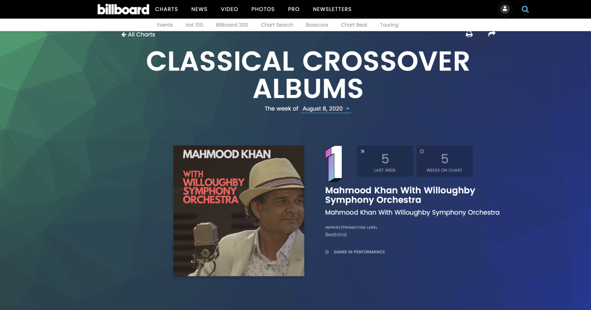

Market-research estimates vary, but the DAW and music-production-software category is commonly framed in the low single-digit billions today, with continued growth driven by bedroom producers, creator tools, mobile creation and AI-assisted workflows.
Record like the pros — without learning sound engineering.
PHATSO
Studio
Record like the pros — without learning sound engineering.
A new music creation platform for writers, producers, hip-hop producers, singers and creators who want to go from idea to finished record without engineering intimidation.
Like having a world-class sound engineer built into the DAW — guiding the beat, vocal sound, musical balance and final finish while you stay focused on the song.
No wiring.
No thresholds.
No plugin-chain confusion.
No studio jargon.
Problem
Millions of creatives want to write, record and release music. Traditional DAWs still force them into the world of engineers.
Routing, buses, sends, thresholds, EQ, compression, plugin chains and mastering jargon slow creativity and keep many people from finishing their music.
Solution
PHATSO Studio removes the engineer from the production loop.
The creator generates a beat, keeps the groove they like, adds musical parts, records vocals, shapes the sound and finishes the track through simple human-language actions. The complex engineering decisions happen under the hood while the user stays in the creative flow. PHATSO Studio gives creators the feeling of a professional recording studio and a world-class sound engineer working inside the platform.
Opportunity
The DAW market is proven. The creator pain is still unsolved.
Major DAWs prove people will pay for recording platforms, but most still assume the user will learn engineering, buy more plugins, watch courses, hire help or live with uncertainty about whether the sound is good enough. PHATSO Studio is positioned around the missing layer: built-in sound-engineer confidence.
Creators often stack DAWs with effects, instruments, vocal chains, mastering tools, samples, presets, courses and engineer help. PHATSO Studio aims to collapse that complexity into one guided recording surface.
| DAW / Platform | Public scale signal | What creators still need |
|---|---|---|
| Logic Pro | Apple pro-app ecosystem; Logic is a long-running flagship DAW. | Plugins, mixing knowledge, vocal chains, mastering decisions, courses or an engineer. |
| Ableton Live | Ableton is a major creator/producer DAW brand with a deep music-maker community. | Sound-design knowledge, mix chains, vocal polish, arrangement decisions and courses. |
| Pro Tools | Pro Tools is a pro-studio standard used across professional recording and post-production. | Engineering skill, studio workflow knowledge, plugins and often a trained operator. |
| FL Studio | One of the dominant beatmaker DAWs, with multiple paid editions. | Beatmaking is accessible, but finished record quality still depends on mixing skill and plugins. |
| BandLab | Reported 60M+ creators and a mass-market creation platform. | Easy entry, but serious finished-record polish can still require outside engineering judgment. |
| PHATSO Studio | Built from PHATSO plugin brand, prototype direction and founder chart/catalogue history. | Designed so the creator does not need extra plugin-chain knowledge, engineering courses or mix confidence anxiety to get a professional-sounding result. |
The creator buys the tool, then still has to build the studio brain around it.
The sound-engineer layer is designed into the workflow, so confidence comes from the platform.
Source signals: market-research estimates vary by definition; BandLab has been reported at 60M+ creators. The key opportunity is not one DAW's disclosed revenue, but the proven willingness to pay for music-creation tools plus the ongoing spend on plugins, courses, presets and engineering help.
How it works
From writing to a produced, finished recording at lightning speed.
Choose a feel
Generate beat
Regenerate
Keep beat
Add session players
Record voice
Make voice right
Make song finished
Core innovation
The sound of a professional studio working for the creator.
Role-Aware Tracks
Drums, bass, keys, vocal, FX and master tracks know their job so users do not need routing language.
AI Session Players
MPC Drummer, Live Drummer, Bass Player and Keys Player help build the track before the vocal.
Pocket Groove
Straight enough to sing over, human enough to feel alive, without scary quantize grids.
Song Health
Balance, energy, clarity, width and finish show creators what the song needs next.
PHATSO Circuit Colours
The plugin brand expands into a full creator platform built around color, feel and finish.
Founder
Built from real studio experience, not theory.

The idea comes from a recording engineer, artist and music creator with 40 years of industry experience, whose work has topped the ARIA, Billboard and iTunes charts. PHATSO Studio turns that real studio experience into a product for the modern creator market.
ARIA, Billboard and iTunes outcomes
Founder career history includes work and releases that have reached major chart positions across ARIA, Billboard and iTunes.
40K+ song catalogue processes
Mahmood has produced and built world-class catalogue processes to create and manage a 40K+ song catalogue distributed through REBEAT, Believe Digital and The Orchard.
PHATSO Color Series is already live
The plugin brand is public, giving PHATSO Studio an existing product identity, visual language and creator-audio foundation.
View PHATSO pluginsFAQ
PHATSO Studio, explained clearly.
A concise investor and creator FAQ for the platform, the market gap, the founder story and the long-term product vision.
What is PHATSO Studio?
PHATSO Studio is a creator-first music production platform designed to help singers, writers, producers and beatmakers move from idea to finished, release-ready music without needing deep sound-engineering knowledge.
Most DAWs are built around engineering workflows. PHATSO Studio is being built around the creator's outcome: capturing emotion, shaping sound, building the track and finishing the record with confidence.
What problem does PHATSO Studio solve?
Millions of music creators can write, sing, produce ideas or make beats, but many struggle to turn those ideas into finished, professional-sounding records.
Traditional DAWs are powerful, but they often expect users to understand routing, buses, EQ, compression, plugin chains, vocal processing, mix balance and mastering. PHATSO Studio is designed to close that gap.
Who is PHATSO Studio for?
PHATSO Studio is being built for singers, songwriters, beatmakers, producers, independent artists, podcasters, vocal creators, young creators developing original music and musicians who want a faster path from idea to finished track.
The goal is not to remove creativity. The goal is to remove technical friction.
How is PHATSO Studio different from a normal DAW?
Traditional DAWs often give users endless tools, menus and technical decisions. PHATSO Studio is being designed around guided production, built-in sound intelligence and finished-record confidence.
The aim is not to compete feature-for-feature with every professional DAW. The aim is to create a simpler, more outcome-focused production environment where creators can make, record, shape and finish music without needing to become engineers.
Is PHATSO Studio an AI music generator?
No. PHATSO Studio is not being designed to replace the creator.
AI-generated songs will become part of the future, and creators may use AI as a tool. But PHATSO Studio is built on the belief that people will always love writing, singing, playing instruments, recording vocals, building tracks and hearing their own ideas come alive.
Why does this product need to exist now?
Music creation has become more accessible than ever, but finishing music still remains difficult for many creators.
There are more tools, plugins, tutorials and AI systems than ever before, but many creators still get stuck when they need their song to sound balanced, emotional, powerful and release-ready.
What is the PHATSO sound-stack?
The PHATSO sound-stack is the foundation behind the PHATSO approach to sound.
It began in 2018 through years of developing production chains, sound concepts and workflow ideas designed to help creators achieve finished, release-ready sound without needing deep engineering knowledge. In 2024, this work evolved into PHATSO Studio as a broader software platform opportunity.
What makes the founder qualified to build PHATSO Studio?
PHATSO Studio is being built from nearly 40 years of lived experience inside music, sound, recording, production and release.
Mahmood Khan / Mahmood Matloob has worked across professional recording environments in Hollywood, Mumbai and Sydney, with experience as a recording artist, producer, songwriter, catalogue operator and music entrepreneur.
His background includes work connected to Sydney Opera House, ARIA #1 and Billboard #1 outcomes, Billboard Top 10 success with an Urdu-language song, Bollywood film music, orchestral recording, hip hop, R&B, pop and world music.
Why is this personal to the founder?
The founder has spent countless hours in studios with hip hop producers, young writers, singers and emerging creators, and has repeatedly seen the same problem: the talent is there, the ideas are there, but the technical barrier gets in the way.
Many creators do not want to become engineers. They want to capture emotion, rhythm, melody and voice before the idea disappears.
What is the current stage of PHATSO Studio?
PHATSO Studio is currently in the founder-led product development and platform architecture stage.
The foundations of the sound-stack have been developed since 2018, and the broader PHATSO Studio platform concept began taking shape in 2024. The next stage is to develop the working MVP, test with creators, validate the workflow and move toward paid beta and commercial launch.
How will PHATSO Studio prove its sound?
PHATSO Studio is being designed to prove its value through real music, not just software claims.
The founder has spent more than 14 months preparing original song material specifically designed to showcase what the PHATSO Studio workflow can become, including high-level cross-genre showcase recordings involving orchestral, hip hop, R&B and pop production.
Who are the main competitors?
PHATSO Studio competes in the broader DAW, music software, plugin and creator-tool market.
Competitors include traditional DAWs such as Logic Pro, Ableton Live, FL Studio and Pro Tools; online creation platforms such as BandLab and Soundtrap; AI music tools; and plugin, sample and mastering ecosystems such as LANDR, Splice, iZotope and Waves.
Is this a red ocean or blue ocean market?
The broader DAW and music software market is a red ocean, with many established competitors.
PHATSO Studio is targeting a blue ocean segment inside that market: creators who are not looking for another complex professional DAW, but for a simpler path to finished, professional-sounding music.
What are the biggest challenges?
The two biggest challenges are product excellence and adoption.
PHATSO Studio must achieve a sound and workflow experience compelling enough for creators to choose it, then build trust in a crowded music software market. The strategy is to start with a focused MVP, test with creators, prove the sound through real showcase recordings, validate demand through paid beta and scale after product-market evidence is clear.
How does PHATSO Studio view AI in music?
PHATSO Studio takes a balanced view.
AI-generated music will become part of the future, but the human desire to write, sing, play, record and perform original music will not disappear. PHATSO Studio is being built to help that human creative process, not replace it.
What is the long-term vision?
The vision is to build PHATSO Studio into a new authority in sound: a creator-first music production platform where professional sound, guided workflow and finished-record confidence are built into the experience.
The ambition is not simply to create another DAW. The ambition is to create a new category of music creation platform for the millions of creators who have songs inside them and need the sound, workflow and confidence to finish them.
Status
Under development. Prototype built. Seeking investment to complete the MVP.
The near-term proof is simple: generate a groove, add musical parts, record a vocal, make the voice right and export the first professional-sounding PHATSO record.
Let’s discuss
mahmoodkhanteam@gmail.com